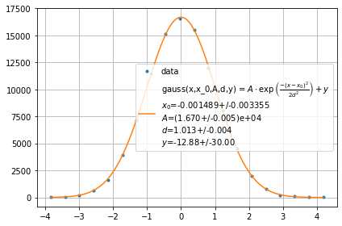
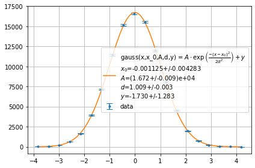
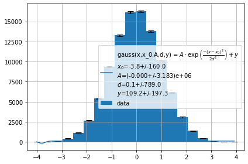
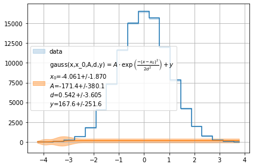
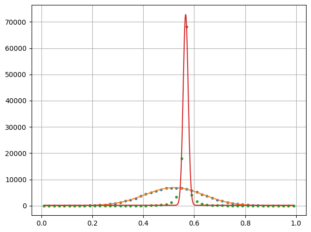

Histogram¶
[1]:
import smpl
from smpl import plot
from smpl import stat
from smpl import functions as f
import numpy as np
np.random.seed(1337)
print(smpl.__version__)
1.2.2.7
Data will be binned for histogram like treatment if bins is set.
[2]:
x= np.random.randn(1000000)
# Default uncertainty of bins is poisson distributed in y direction and none for x
plot.fit(x,f.gauss,bins=20,label="data",binunc=stat.no_dist,init=True)
plot.fit(x,f.gauss,bins=20,label="data",init=True)
plot.fit(x,f.gauss,bins=20,label="data",fmt="hist",init=True)
plot.fit(x,f.gauss,bins=20,label="data",sigmas=1,fmt="step",init=True)
[2]:
[0.0010842265649107883+/-0.001264572677906874,
192350.94141512472+/-294.0943648392889,
1.0105224821893826+/-0.0008924698440256419,
-0.7360648753124597+/-1.8266503796695654]




[3]:
x= np.random.randn(100000)
plot.fit(stat.normalize(x),stat.normalize(x**3),f.gauss,bins=50,lpos=-1,binunc=stat.no_dist,init=False)
[3]:
[[0.52103884804064+/-0.0003967157119793374,
6910.278158279774+/-22.253210381915036,
0.11555535800606304+/-0.0004925003769908674,
-1.5523556305041395+/-12.263909940094715],
[0.5664108968256599+/-0.00023031532616933384,
72621.89660637952+/-666.1540111843456,
-0.009812650364528625+/-0.00012509039031320053,
200.50920072112027+/-83.20183658852704]]

[ ]: